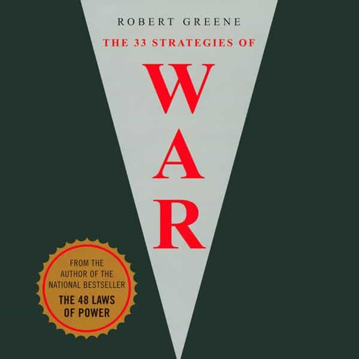

Libertas is a young bard traveling along the endless road to self-improvement and recounting his adventures. You can follow him on Twitter.


Robert Greene is famous for his books on seduction. The Art of Seduction is a self-descriptive title and The 48 Laws of Power often deals with the subject as well, since power and seduction go hand-in-hand, but it’s another book of his, The 33 Strategies Of War, that arguably provides the best game advice of all his works.
This isn’t only because of the classical application of strategy which is detailed in the book, but because an entire section of it deals with something he calls “self-directed warfare.” This is an application of strategy to conquering yourself—your insecurities, weaknesses, desires that could lead you astray, and turning your thoughts into focus and action, all of which are crucial in any game setting. In the arts of seduction and warfare, the first thing you must do is conquer your own weaknesses, and The 33 Strategies of War will help with that.
The book is a long one, but well worth the read, and the following strategies will help to improve your game.

1. Look at things as they are, not as your emotions color them.
2. Judge people by their actions.
3. Depend on your own arms (in other words, depend on the faculties of your own mind and ingenuity—external resources can be taken from you, but never your cleverness, courage, or energy).
4. Worship Athena, not Ares (your interest is in results and pragmatism, not fits of passion).
5. Elevate yourself above the battlefield (think strategically, not tactically—everything you do should be purposed with achieving your long-term objectives).
6. Spiritualize your warfare (you go to war with your own weaknesses constantly, welcoming the opportunity to improve as a warrior).
All of these concepts are things you’ll encounter at sites like Return of Kings, and for good reason. Robert Greene goes over them in more detail, with clearer examples than I’ve seen anywhere else.
What weighs us down is usually the mistakes or ill-experiences of the past. These cause us to lose confidence. For instance, when I was starting, it was terrifying for me to approach women, simply because I didn’t have much experience doing it, and this lack of experience in turn dictated my future actions. I didn’t approach because I didn’t believe I could because I had little experience.
But in this, I was fighting the last war. I was letting the past set the future in stone. With a few tries and successes, I was on my way, and this fear regressed quickly. Once I turned my attention to the present, things looked brighter.
The mistake of fighting the last war applies to your successes just as much as your failures. The same routine won’t work every time. Get too caught up in what’s worked for you in the past and you’ll lose sight of what’s required in the present. Robert Greene says:
Never take it for granted that your past successes will continue into the future. Actually, your past successes are your biggest obstacle: every battle, every war, is different, and you cannot assume that what worked before will work today. You must cut yourself loose from the past and open your eyes to the present. Your tendency to fight the last war may lead to your final war.
Each interaction must be treated differently. Men like to organize things into systems, but this can set us back in the game. Seduction isn’t a logical process. Greene goes further:
What makes us go astray in the first place is that we are unattuned to the present moment, insensitive to the circumstances. We are listening to our own thoughts, reacting to things that happened in the past, applying theories and ideas that we digested long ago but that have nothing to do with our predicament in the present.
Understand: the greatest generals, the most creative strategists, stand out not because they have more knowledge but because they are able, when necessary, to drop their preconceived notions and focus intensely on the present moment.
Understand: presence of mind is the ability to detach yourself, to see the whole battlefield, the whole picture, with clarity.
The game is an emotional experience and your thoughts will be clouded. Fear is the most prominent emotion—fear of the approach, fear to escalate, etc. In these stressful situations, most people see problems everywhere and defeat in the smallest setback, Greene explains.
The answer to this fear is to be more aggressive. Fear (particularly in this situation) is mostly an illusion based on the unknown. Because of this dreadful feeling, you’ll conjure up scenarios that are unrealistic, but will feel more important because you’re paying attention to them. People falsely believe that whatever they’re paying attention to is automatically the most important thing and failure to control this cognitive bias will lead you down a dark road. The best way to compensate for this is to divert your attention elsewhere.
The 33 Strategies Of War cites the example of the famous Admiral Nelson:
The moment he entered battle, he ratcheted up his aggressive impulses. Where other sea lords worried about casualties, the wind, changes in the enemy’s formation, he concentrated on his plan. Before battle no one strategized or studied his opponent more thoroughly. (That knowledge helped Nelson to sense when the enemy was ready to crumble.) But once the engagement began, hesitation and carefulness were dropped.
The target of your strategies should be less the army you face than the mind of the man or woman who runs it.
Of all the strategies provided in the book, this one was the most insightful, and has an important application in your game. If there’s one thing that stands out about myself it’s that my ramble game is very good, but I often overpower the conversation, which doesn’t let her invest enough in it. Not long before reading this, I read a modern classic on rhetoric, Verbal Judo, the central message of which was that the most important tool of verbal persuasion is the ability to empathize—to see through the eye of another, and to commune with that perspective. The two books gave me a new viewpoint on how to improve my day game.
The most important objective in the campaign, Greene says, is the opponent’s mind. In warfare, if you can degrade and destroy the mind of your enemy, physical concerns become secondary. In seduction, the goal is the opposite: to commune with the mind of the object of your affections and get closer to a single-mindedness that an ideal relationship would have.
When beginning any relationship, it’s imperative to have an endgame in sight. Is this a short term relationship, a long term one, or are there red flags flying all over the place telling you there should be none at all?
The warning of proceeding without an exit strategy is made clear:
The worst way to end anything–a war, a conflict, a relationship–is slowly and painfully. The costs of such an ending run deep: loss of self-confidence, unconscious avoidance of conflict the next time around, the bitterness and animosity left breeding—it is all an absurd waste of time. Before entering any action, you must calculate in precise terms your exit strategy. How exactly will the engagement end, and where it will leave you? If the answers to those questions seem vague and full of speculation, if success seems all too alluring and failure somewhat dangerous, you are more than likely taking a gamble. Your emotions are leading you into a situation that could end up a quagmire.
There have been too many articles to count on this site on the dangers of choosing the wrong women to get involved with. In this age of mass hysteria where asking a woman out on a date can now be construed as “sexual misconduct,” this strategy is especially important. The game is often about what you don’t do. Always have an exit strategy with any interaction.
Read Next: How Robert Cialdini’s Book “Pre-Suasion” Improved My Game